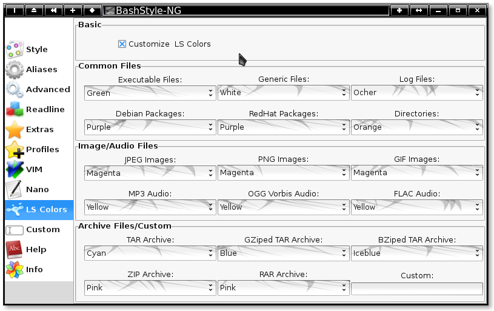

Chapter 11: LS Colors

11.1 Customize LS Colors:
LS_COLORS defines which color is used by `ls' for a given filetype.
Use the comboboxes to adjust the color for common filetypes.
11.2 Custom:
Change the LS_COLORS for anything not mentioned in the UI.
Syntax: * File = color :
Example: `*README=01;31:', will result in README files being red.